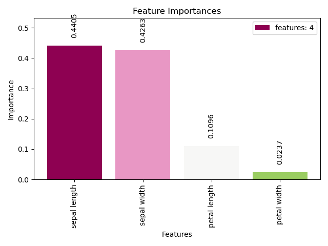
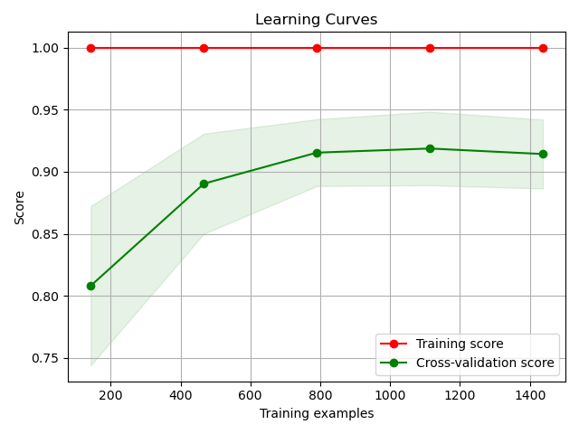

1.1. Estimators Module#
This module includes functions for evaluating estimators, such as plotting learning curves and feature importances.
This package/module is designed to be compatible with both Python 2 and Python 3. The imports below ensure consistent behavior across different Python versions by enforcing Python 3-like behavior in Python 2.
The scikitplot.estimators module includes plots built specifically for
scikit-learn estimator (classifier/regressor) instances e.g. Random Forest.
You can use your own estimators, but these plots assume specific properties
shared by scikit-learn estimators. The specific requirements are documented per
function.
- scikitplot.estimators.plot_feature_importances(model, title='Feature Importances', ax=None, figsize=None, title_fontsize='large', text_fontsize='medium', cmap='PiYG', orientation='vertical', x_tick_rotation=None, bar_padding=11, display_labels=True, class_index=None, threshold=None, order=None, feature_names=None, digits=4)[source][source]#
Generates a plot of a sklearn model’s feature importances.
This function handles different types of classifiers and their respective feature importances or coefficient attributes. It supports models wrapped in pipelines. Error bars can be added based on different statistical methods or custom functions.
Supports models like LogisticRegression, RidgeClassifier, KNeighborsClassifier, LinearSVC, SVC, DecisionTreeClassifier, BaggingClassifier, RandomForestClassifier, Perceptron, BayesianRidge, HuberRegressor, TweedieRegressor, LatentDirichletAllocation, PCA, LinearDiscriminantAnalysis, and QuadraticDiscriminantAnalysis.
- Parameters:
model (estimator object) – A fitted sklearn model or pipeline containing a classifier.
title (str, optional) – Title of the generated plot. Defaults to “Feature Importances”.
ax (matplotlib.axes.Axes, optional) – The axes upon which to plot the curve. If None, the plot is drawn on a new set of axes.
figsize (tuple, optional) – Tuple denoting figure size of the plot e.g. (6, 6). Defaults to None.
title_fontsize (str or int, optional) – Matplotlib-style fontsizes. Use e.g. “small”, “medium”, “large” or integer-values. Defaults to “large”.
text_fontsize (str or int, optional) – Matplotlib-style fontsizes. Use e.g. “small”, “medium”, “large” or integer-values. Defaults to “medium”.
cmap (str or matplotlib.colors.Colormap, optional, default='PiYG') – Colormap used for plotting. - See Matplotlib Colormap documentation for options.
orientation ({'vertical', 'horizontal'}, optional) – Orientation of the bar plot. Defaults to ‘vertical’.
x_tick_rotation (int, optional) – Rotates x-axis tick labels by the specified angle. Defaults to None (automatically set based on orientation).
bar_padding (float, optional) – Padding between bars in the plot. Defaults to 11.
display_labels (bool, optional) – Whether to display the bar labels. Defaults to True.
class_index (int, optional) – Index of the class of interest for multi-class classification. Defaults to None.
threshold (float, optional) – Threshold for filtering features by absolute importance. Only features with an absolute importance greater than this threshold will be plotted. Defaults to None (plot all features).
order ({'ascending', 'descending', None}, optional) – Order of feature importance in the plot. Defaults to None (automatically set based on orientation).
feature_names (list of str, optional) – List of feature names corresponding to the features. If None, feature indices are used.
digits (int, optional, default=4) – Number of digits for formatting AUC values in the plot.
- Returns:
ax – The axes on which the plot was drawn.
- Return type:
Examples
>>> # from sklearn.datasets import load_iris as load_data # multi >>> from sklearn.datasets import load_breast_cancer as load_data # binary >>> from sklearn.model_selection import train_test_split >>> from sklearn.preprocessing import StandardScaler >>> from sklearn.linear_model import LogisticRegression >>> from sklearn.ensemble import RandomForestClassifier >>> from sklearn.pipeline import make_pipeline >>> import matplotlib.pyplot as plt >>> import scikitplot as skplt >>> X, y = load_data(return_X_y=True) >>> X_train, X_test, y_train, y_test = train_test_split(X, y, test_size=0.5, random_state=0) >>> clf = make_pipeline(StandardScaler(), RandomForestClassifier()) >>> clf.fit(X_train, y_train) >>> ax, features = skplt.estimators.plot_feature_importances(clf); >>> features
- scikitplot.estimators.plot_learning_curve(clf, X, y, title='Learning Curves', ax=None, figsize=None, title_fontsize='large', text_fontsize='medium', cv=None, scoring=None, train_sizes=None, shuffle=False, random_state=None, n_jobs=1)[source][source]#
Generates a plot of the train and test learning curves for a classifier.
The learning curves plot the performance of a classifier as a function of the number of training samples. This helps in understanding how well the classifier performs with different amounts of training data.
- Parameters:
clf (object) – Classifier instance that implements fit and predict methods.
X (array-like, shape (n_samples, n_features)) – Training data, where n_samples is the number of samples and n_features is the number of features.
y (array-like, shape (n_samples,) or (n_samples, n_features), optional) – Target relative to X for classification or regression; None for unsupervised learning.
title (str, optional, default="Learning Curves") – Title of the generated plot.
cv (int, cross-validation generator, or iterable, optional) –
Determines the cross-validation strategy to use for splitting: - None, to use the default 3-fold cross-validation, - integer, to specify the number of folds, - An object to be used as a cross-validation generator, - An iterable yielding train/test splits.
For integer/None inputs, if y is binary or multiclass, StratifiedKFold is used. If the estimator is not a classifier or if y is neither binary nor multiclass, KFold is used.
shuffle (bool, optional, default=True) – Whether to shuffle the training data before splitting using cross-validation.
random_state (int or RandomState, optional) – Pseudo-random number generator state used for random sampling.
train_sizes (iterable, optional) – Determines the training sizes used to plot the learning curve. If None, np.linspace(.1, 1.0, 5) is used.
n_jobs (int, optional, default=1) – Number of jobs to run in parallel.
scoring (str, callable, or None, optional, default=None) – A string (see scikit-learn model evaluation documentation) or a scorer callable object/function with signature scorer(estimator, X, y).
ax (matplotlib.axes.Axes, optional) – The axes upon which to plot the curve. If None, a new figure and axes are created.
figsize (tuple of int, optional) – Tuple denoting figure size of the plot, e.g., (6, 6). Defaults to None.
title_fontsize (str or int, optional, default="large") – Font size for the plot title. Use e.g., “small”, “medium”, “large” or integer values.
text_fontsize (str or int, optional, default="medium") – Font size for the text in the plot. Use e.g., “small”, “medium”, “large” or integer values.
- Returns:
The axes on which the plot was drawn.
- Return type:
Notes
If cv is not specified, 3-fold cross-validation is used by default. The plot will show the learning curves for training and test data across different training sizes.
Examples
>>> import scikitplot as skplt >>> from sklearn.ensemble import RandomForestClassifier >>> from sklearn.datasets import load_iris >>> X, y = load_iris(return_X_y=True) >>> rf = RandomForestClassifier() >>> skplt.estimators.plot_learning_curve(rf, X, y) <matplotlib.axes._subplots.AxesSubplot object at 0x7fe967d64490> >>> plt.show()